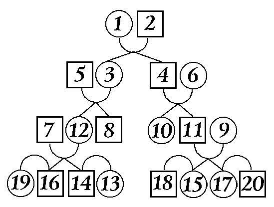

Terminología de las relaciones de parentesco
La comprensión de la terminología relativa a las relaciones es una parte esencial de cualquier trabajo relacionado con la genealogía.
Algunos términos que definen un grado de relación, por ejemplo, la extendida palabra "antepasado",
tiene un significado general: cualquier persona del árbol genealógico, empezando por el abuelo. Sin embargo,
hay términos que definen sucintamente un grado de relación entre personas.
Tales términos deben utilizarse dentro de un contexto, en el que correspondan a su significado.
El siguiente diagrama muestra los términos usados en las distintas relaciones.

1-2 - marido y mujer;
PRIMER GRADO DE RELACIÓN: 1-3 - padre e hijo,
1-4 - padre e hija,
2-3 - madre e hijo,
2-4 - madre e hija;
SEGUNDO GRADO DE RELACIÓN: 1-8 y 1-11 - abuelo y nietas,
2-10 y 2-12 - abuela y nietos;
TERCER GRADO DE RELACIÓN: 1-15 y 1-17 - bisabuelo y bisnietos,
3-10 - tío y sobrino,
4-8 - tía y sobrina;
CUARTO GRADO DE RELACIÓN: 8-11 - primas,
10-12 - primos,
3-15 y 3-17 - tío-abuelo y sobrino-nietos,
4-14 y 4-16 - tía-abuela y sobrina-nietas;
QUINTO GRADO DE RELACIÓN: 12-15 y 12-17 - primo del padre o de la madre e hijos del primo hermano;
SEXTO GRADO DE RELACIÓN: 14-15 y 16-17 - primos segundos;
PRIMER GRADO DE RELACIÓN POLÍTICA: 1-5 - suegro (padre del marido) y nuera,
1-6 - suegro (padre de la esposa) y yerno,
2-6 - suegra (madre de la esposa) y yerno,
2-5 - suegra (madre del marido) y nuera;
SEGUNDO GRADO DE RELACIÓN POLÍTICA: 7-8 - nuera y cuñada,
9-10 - yerno y cuñado (hermano de la esposa),
13-16 - yerno y cuñada (hermana de la esposa),
17-18 - cuñado (hermano del marido) y cuñada (esposa del hermano);;
TERCER GRADO DE RELACIÓN POLÍTICA: 13-19 - cuñados (maridos de las hermanas),
18-20 - cuñadas (esposas de los hermanos).
La terminología de las relaciones es variada y complicada.
La mayoría de los términos han desaparecido del lenguaje moderno y se utilizan raramente.
Algunos términos sólo se utilizan en determinadas comunidades.
De hecho, cuando hable con sus familiares o con personas mayores,
es posible que oiga alguna palabra desconocida en la conversación.
Por tanto, hay motivos para familiarizarse con la terminología de las relaciones.
Hay tres grupos de términos:
- parentesco (lazos de sangre),
- políticas (por matrimonios),
- y relaciones estrechas (espirituales) sin parentesco.
Relación de términos
Cuando se familiarice con los términos de relación, recuerde que los términos de relación de sangre contienen palabras clave y atributos de grado de relación.
Palabras clave:
-
Abuela - madre del padre o de la madre, esposa del abuelo.
- Abuelo - padre de la madre o del padre.
-
Antepasado, rodonachal'nik† - la primera persona conocida de la línea, que inició el pedigrí.
-
Bratan, bratanik, bratenja, bratenik,
bratel'nik
† - primo.
-
Bratanna† - hija del hermano, sobrina por línea de hermano.
-
Bratel'nica† - pariente en general, pariente por línea paterna o materna, o pariente lejano.
-
Bratych† - hijo del hermano, sobrino por línea de hermano.
-
Dedina, dedka† - tía en la línea del tío.
-
Dedich† - heredero directo por línea paterna.
-
Dshcherich† - sobrino en la línea de la tía.
-
Dshchersha† - sobrina por línea de tía.
- Hermana - hijas de cada uno de padres
- Hermano - hijos de cada uno de padres
- Hija - mujer hacia sus padres.
- Hijo - hombre hacia sus padres.
- Madre - mujer hacia sus hijos.
-
Nieto - hijo de la hija o del hijo
-
Nieta, vnuka† - hija de la hija o del hijo
-
Otcenachal'nik† - el mayor de la generación.
- Otchinnik, otchich† - hijo, heredero.
- Padre - hombre hacia sus hijos.
- Plemjash† - pariente.
-
Progenitores - la primera pareja conocida de la línea familiar, que inició la familia.
-
Sestrennica† - prima, hija de hermana materna o paterna.
-
Sestrenka, sestrina, sestrichka† - primo.
-
Sestrenich, sestrich† - hijo de hermana materna o paterna, sobrino por línea materna.
- Sobrino - hijo del hermano o de la hermana.
- Sobrina - hija del hermano o de la hermana.
-
Trastarabuelo(a), prashchur† - el padre (o la madre) del tatarabuelo o la tatarabuela.
- Tia - hermana de la madre o del padre.
- Tio - hermano de la madre o del padre.
Atributos del grado de relación:
-
Tío abuelo - hermano del abuelo o de la abuela.
-
Tía abuelo - hermana del abuelo o de la abuela.
-
Vnuchatnyj, vnuchatyj† - cuando se habla de una relación que comienza hace tres o más generaciones.
-
Dvojurodnyj† - cuando se habla de una relación que comienza hace dos generaciones.
-
Sangre - cuando se habla de una relación dentro de una misma familia.
- Tío - hermano del padre o de la madre.
- Tía - hermana del padre o de la madre.
-
Homogéneo -cuando se habla de un origen de un solo padre.
-
Odnoutrobnyj† - cuando se habla de un origen de madre soltera.
-
Polnorodnyj† - cuando se habla de un origen de padres solteros.
-
Pre - prefijo que designa una relación en orden lejano ascendente o descendente.
-
Privenchannyj† - cuando se habla de un origen de uno de los progenitores,
y cuando el hijo había nacido antes de que los padres se casaran, pero se legitimó después.
-
Hijastro, Svodnyj† -un hijo nacido de su marido o mujer durante una relación anterior.
- Trojurodnyj† - ver vnuchatyj.
†Trasliteración de palabras rusas, imposibles de traducir al español.
Términos generales
- Bratanikha† - la esposa de su primo.
-
Cuñada, bratova† - la esposa de su hermano.
-
Viuda - una mujer cuyo marido ha muerto y que no se ha vuelto a casar.
-
Viudo - hombre cuya esposa ha muerto y que no se ha vuelto a casar.
- Cuñado - hermano del marido.
- Esposa - la mujer con la que un hombre está casado.
-
Prometido - hombre con el que una mujer está comprometida para casarse.
-
Cuñada (zolovica, zolova)† - hermana del marido
-
Zjat'† - marido de la hija, de la hermana, o de la cuñada.
-
Marido - hombre con el que una mujer está casada.
- Nuera - esposa del hijo
-
Padre del yerno, padre de la nuera, madre del yerno, madre de la nuera
- los padres, desde el punto de vista políticos, de una pareja.
- Suegro - padre del marido o de la esposa.
- Suegra - madre del marido o de la esposa
-
Conexión - persona con relaciones legales por línea paterna o materna.
-
Cuñados, svojak† - maridos de dos hermanas.
-
Svojaki dvojurodnye† - maridos de dos primas.
-
Nuera (snokha, synokha)† - esposa del hijo.
-
Snoshennica† - esposa del cuñado, esposas de dos hermanos, nueras.
- Suprug† - marido.
- Supruga† - esposa.
- Suegro - padre de la esposa.
- Suegra - madre de la esposa.
-
Cuñado (shurin)† - hermano de la esposa.
Términos de relaciones no familiares
Las relaciones no familiares tienen un gran valor en la vida de una persona.
Estas relaciones influyeron en los términos genealógicos.
Cabe señalar que los términos de parentesco no emparentado están próximos a los términos de parentesco consanguíneo.
Intenta no confundirlos.
- Brat krestnyj† - hijo del padrino
-
Brat krestovyj, brat po krestu, brat
nazvannyj
† - hombres que intercambiaban sus cruces-
-
Ded krestnyj† - padre del padrino
- Doch' nazvannaja† - hijo adoptivo.
-
Tutor - una persona que cuida y supervisa al niño.
-
Kum, kuma† - ver padrino y madrina.
-
Madrina, mat' krestovaja† - mujer que presenta y asiste a quien recibe el bautismo y que contrae con él ciertos compromisos.
-
Mat' nazvannaja† - madre de acogida.
- Mat' molochnaja† - nodriza.
-
Mat' posazhennaja† - mujer que sustituye a la madre del prometido en la boda.
-
Madrastra - mujer del padre de una persona nacida de una unión anterior de este.
-
Padrino - hombre que presenta y asiste a quien recibe el bautismo y que contrae con él ciertos compromisos.
-
Otec nazvanyj† - padre de acogida.
-
Otec pribesednyj, otec posazhenyj, otec
rjazhenyj
† - hombre que sustituye al padre de la prometida en la boda.
-
Padrastro - marido de la madre de una persona nacida de una unión anterior de aquella.
-
Hijastra - hija nacida durante una relación anterior, pariente de un progenitor de acogida.
-
Hijastro - un hijo nacido durante una relación anterior, pariente de un progenitor de acogida.
-
Hijastros - hermanos y hermanas que nacieron de padres diferentes.
-
Ahijado (syn krestnyj, krestnik)† - Persona que es apadrinada o amadrinada por otra en su bautizo.
- Syn nazvanyj† - hijo adoptivo.
-
Hijo adoptivo (usynovlennyj)† - un niño respecto a sus padres adoptivos.
-
Hija adoptiva (udocherennaja)† - una niña respecto a sus padres adoptivos.
† Se trata de palabras no españolas imposibles de traducir de los dialectos nativos rusos.